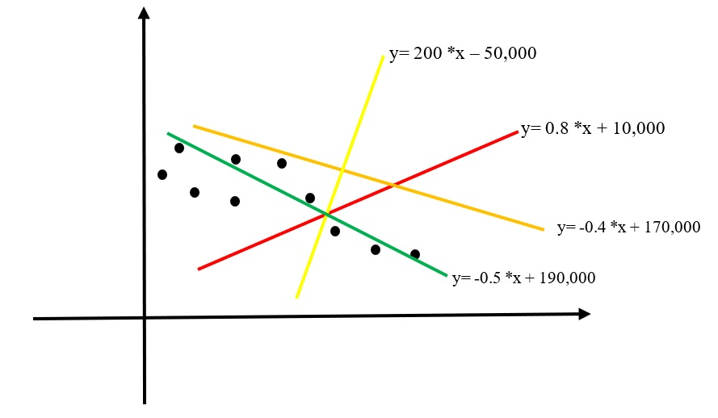

Section 1. What is a linear regression?
- It tries to find a linear function y=wx+b.
- The linear function tries to fit a collection of number pairs, such as house sales, (sqft, sale price).
- There is no linear function that can accurately fit all number pairs. So, we have to find the 'best' one.
- By being best, we design a so-called cost function, such as mean square error invented by the great Carl Gauss.
- This is what machine learning is doing.

Section 2. The JavaScript libraries to use
We will use TensorFlow.js to train the model.
Click the 'Run' button below to import two JavaScript libraries.
Import https://cdn.jsdelivr.net/npm/@tensorflow/tfjs@1.0.0/dist/tf.min.js for defining and training models.
Import https://cdn.jsdelivr.net/npm/@tensorflow/tfjs-vis@1.0.2/dist/tfjs-vis.umd.min.js for web browser visualization.
Section 3. Using the dataset from Google
We will use a dataset from Google, https://storage.googleapis.com/tfjs-tutorials/carsData.json.
Section 4. Extract the Miles_per_Gallon and Horsepower
We will use only Miles_per_Gallon:value and Horsepower: value for our training.
Section 5. Visualize the training dataset
Section 6. Define the model
We will define a TensorFlow sequential model with one input x and one output y.